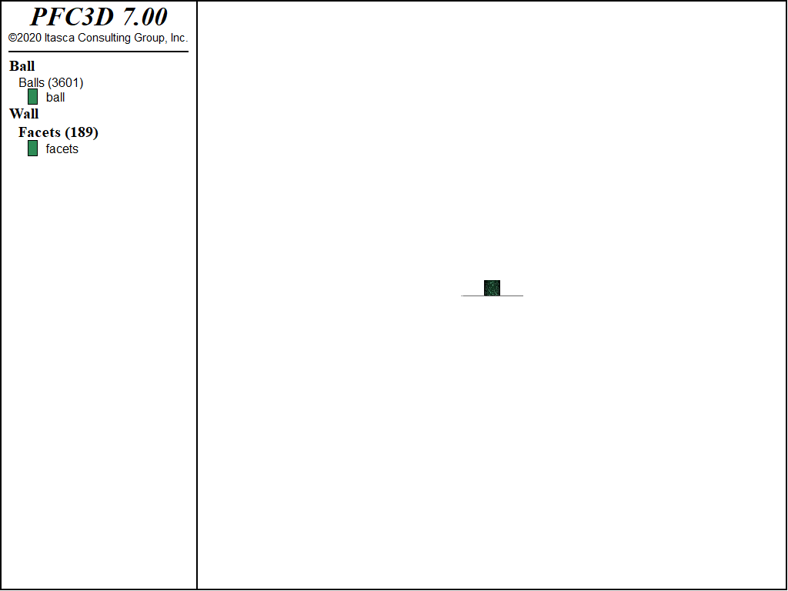
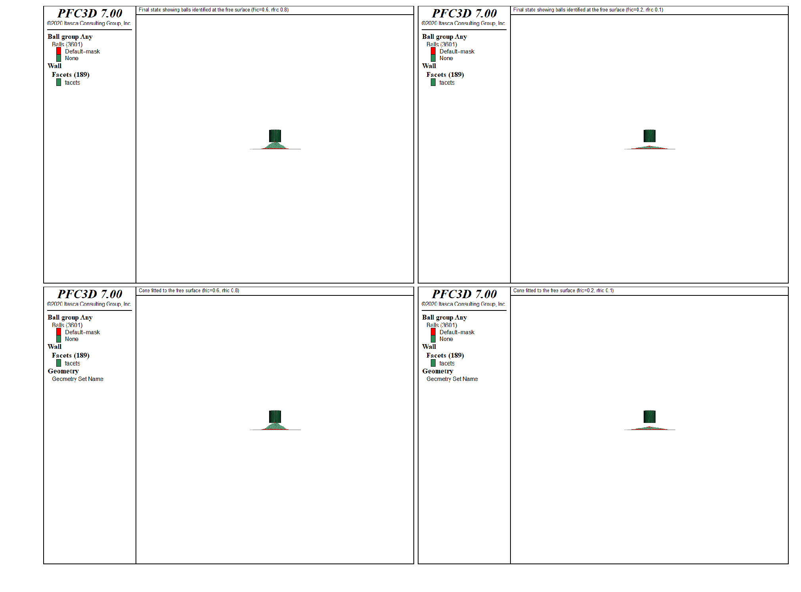
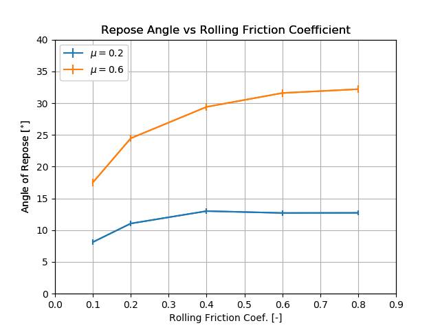

滚动阻力线性接触模型：休止角
引言
注意
本算例的项目文件可在 PFC 中查看或运行。[1]所用的数据文件（data files）列于本算例末尾。
在本例中，通过向上提升一个初始装满在重力作用下静止的球颗粒的容器来形成颗粒堆积体。计算中采用 滚动阻力线性接触模型（rolling resistance linear contact model），并以不同的摩擦系数和滚动阻力系数取值多次进行模拟，以研究它们对堆积体最终形状的影响。本例在 PFC2D 和 PFC3D 中均有介绍。文中演示了使用 Python 脚本执行批处理作业的方法。在 3D 算例中，还提出了一种使用 Python 脚本估算最终堆积体休止角的自动化流程。
PFC2D 模型
本节介绍 PFC2D 模型。
初始状态
初始状态由容器中在重力作用下静止的颗粒柱组成（图 1（Fig. 1））。该状态使用数据文件 make_system.dat (2D) 建立。下面讨论该文件中的部分代码行。

图 1：初始系统。
为方便起见，输入参数使用内联 FISH 定义为全局 FISH 变量（参见 此处（here）），具体代码如下：
; 容器与球的属性
[cyl_rad = 50.0e-3 ] ; 容器半宽 [m]
[cyl_height = 100.0e-3] ; 容器高度 [m]
[ravg = 1.5e-3 ] ; 球平均半径 [m]
[rdev = 0.5 ] ; 球半径相对偏差 [-]
[dens = 2.0e3 ] ; 球密度 [kg/m3]
[poros = 0.3 ] ; 初始孔隙率 [-]
; 接触模型参数
[emod = 1.0e6] ; 杨氏模量（deformability 方法）[Pa]
[kratio = 2.0 ] ; 刚度比（deformability 方法）[-]
[fric = 0.01 ] ; 摩擦系数 [-]
[dpnr = 0.2 ] ; 法向临界阻尼比 [-]
[dpsr = 0.2 ] ; 切向临界阻尼比 [-]
[dpm = 3 ] ; 阻尼器模式 [-]
[rfric = 0.0 ] ; 滚动阻力系数 [-]
第一组参数定义容器尺寸，以及所生成球颗粒云的粒径分布、密度和孔隙率。容器设置为 100 mm × 100 mm 的正方形，球颗粒半径围绕 1.5 mm 的均值具有 0.5 的相对偏差，密度为 2000.0 kg/m3。几何体由两个独立的墙体构成：一个横跨整个计算域的水平底面，以及一个由 3 个面片组成的容器。
; 生成底面与容器
wall generate id 1 ...
name 'base_plane' ...
plane
wall create id 100 ...
name 'container' ...
vertices [-cyl_rad] 0.0 [-cyl_rad] [cyl_height] ...
[-cyl_rad] [cyl_height] [ cyl_rad] [cyl_height] ...
[cyl_rad] [cyl_height] [ cyl_rad] 0.0
初始球颗粒云使用 ball distribute 命令创建：
ball distribute porosity [poros] ...
resolution [ravg] ...
radius [1.0-0.5*rdev] [1.0+0.5*rdev] ...
box [-1.0*cyl_rad] [1.0*cyl_rad] ...
0.0 [cyl_height]
第二组参数定义系统中将使用的接触模型属性。这组参数用于设置 接触模型分配表（CMAT）（Contact Model Assignment Table (CMAT)） 的默认槽位，以及 滚动阻力线性接触模型（rolling resistance linear contact model）：
; 设置 CMAT 的默认槽位
contact cmat default model rrlinear method deformability ...
emod [emod] ...
kratio [kratio] ...
property fric [fric] ...
dp_nratio [dpnr] ...
dp_sratio [dpsr] ...
dp_mode [dpm] ...
rr_fric [rfric]
这些属性的详细说明请参阅 滚动阻力线性接触模型一节（rolling resistance linear contact model section）。请注意，在此阶段采用了非常小的摩擦系数值，并将滚动阻力系数设为零。采用这些取值是为了产生相对密实的最终状态。另请注意，接触杨氏模量设为 1MPa（使用接触模型的 变形性（deformability） 方法）。该值足以确保系统保持在刚性颗粒极限之内（即接触杨氏模量与柱底最大应力之比足够大，或者反过来说，重叠量相对于相互接触的球颗粒直径足够小，从而进一步增大接触刚度也不会影响结果），同时可优化估算的时步。
最后，设置重力，并设置球颗粒密度和局部阻尼系数属性；随后用以下命令将系统求解至平衡：
; 在重力荷载下使其静止
ball attribute density [dens] damp 0.7
model large-strain on
model cycle 1000 calm 10
model gravity 9.81
model solve
ball attribute damp 0.0
model save 'system_ini.p2sav'
请注意，将 calm 关键字与 执行计算时步（model cycle） 命令配合使用，以高效地消除由 ball distribute 命令固有的较大初始重叠所产生的能量。在此阶段将局部阻尼设为较大的值 0.7，因为我们只关注最终的平衡状态（而不关注系统所经历的路径）。在进入堆体形成阶段之前将其重置为零。
堆积体形成
最终的堆体形态通过将容器墙体向上提升而形成。这一过程通过以下一组命令完成（位于文件 move_container.dat (2D) 中）：
[cyl_vel = 5.0e-2] ; 向上的速度 [m/s]
model mechanical time-total 0.0
contact cmat default property fric [fric] rr_fric [rfric]
contact property fric [fric] rr_fric [rfric]
wall attribute velocity-y [cyl_vel] range id 100 by wall
ball attribute displacement multiply 0.0
model solve time [0.75*cyl_height/cyl_vel]
wall attribute velocity-y 0.0 range id 100 by wall
model solve ratio-average 1e-5
model save [string.build('system_final-fric%1-rfric%2.p2sav',fric,rfric)]
请注意，CMAT 的默认槽位在循环计算之前即被修改。这可确保将要形成的新接触使用更新后的摩擦系数和滚动阻力系数值。此外，现有接触处的这些属性值也会被修改。
此文件并不用于直接执行。它可以被另一个数据文件依次调用，以便用不同的参数集执行一系列模拟。例如，文件 do_analysis.dat (2D) 将执行 3 次模拟，其中摩擦系数为 0.5，滚动阻力系数分别为 0.1、0.5 和 1.0：
model restore 'system_ini'
[fric = 0.5]
[rfric = 0.1]
program call 'move_container.dat'
;
model restore 'system_ini'
[fric = 0.5]
[rfric = 0.5]
program call 'move_container.dat'
;
model restore 'system_ini'
[fric = 0.5]
[rfric = 1.0]
program call 'move_container.dat'
或者，也可以使用 Python 脚本执行批量作业，如文件 do_analysis.py 所示：
import itasca
fric = [0.25,0.5]
rfric = [0.05,0.1,0.25,0.5,0.6]
for f in fric:
for rf in rfric:
itasca.command("""
model restore 'system_ini'
[fric = {0}]
[rfric = {1}]
program call 'move_container.dat'
""".format(f,rf)
)
与 FISH 不同，Python 状态独立于 PFC 模型状态。在此特定情况下，这使得可以在 Python 循环内部调用 restore 命令。此示例定义了两个数值列表，并使用嵌套循环来探索该参数空间。
对于 \(\mu=0.25\)，滚动摩擦系数所有取值下的最终状态示于 图 2（Fig. 2）；对于 \(\mu=0.5\)，则示于 图 3（Fig. 3）。

图 2：最终系统，\(\mu = 0.25\) 与 \(\mu_r = 0.05\)（左上）、\(\mu_r = 0.1\)（右上）、\(\mu_r = 0.25\)（左下）以及 \(\mu_r = 0.5\)（右下）。

图 3：最终系统，\(\mu = 0.5\) 与 \(\mu_r = 0.05\)（左上）、\(\mu_r = 0.1\)（右上）、\(\mu_r = 0.25\)（左下）以及 \(\mu_r = 0.5\)（右下）。
由这两幅图可以定性地讨论摩擦系数与滚动摩擦系数的影响。在摩擦系数恒定时，堆体的休止角随滚动摩擦系数的增大而增大。然而，若滚动摩擦系数等于或大于摩擦系数，这种增大会趋于平缓（例如参见 图 2（Fig. 2） 中的下排图）。同样地，在滚动摩擦系数恒定时，休止角也随摩擦系数的增大而增大。
本模型缺乏一种能够估算最终堆体休止角的系统化方法，而只有具备这样的方法才能对结果进行定量比较。该问题在下面介绍的 PFC3D 模型中予以解决。
PFC3D 模型
PFC3D 模型与上文介绍的 PFC2D 模型类似，区别在于容器为圆柱形，并且为限制模型规模，球颗粒的平均半径为 3.0 mm、相对偏差为 0.25。初始系统（图 4（Fig. 4））使用文件 make_system.dat (3D) 构建，堆体形成过程使用文件 do_analysis.py 模拟，该文件依次调用 move_container.dat (3D)，以不同的摩擦系数和滚动摩擦系数值执行多次运行。
三维示例同样采用了自动化的方法来估算三维堆体的休止角。该方法使用下文讨论的 Python 脚本。


图 4：初始系统。
后处理：休止角的测量
最终状态的后处理使用 Python 脚本 post_treat.py 完成，其完整内容复制如下：
import utils
import matplotlib.pyplot as plt
fric = [0.2,0.6]
rfric = [0.1,0.2,0.4,0.6,0.8]
val = []
conf = []
leg = []
for f in fric:
ra = []
ci = []
for rf in rfric:
p,c = utils.fit_cone('system_final-fric{0}-rfric{1}.sav'.format(f,rf))
ra += [p]
ci += [c]
val += [ra]
conf += [ci]
leg += [r'$\mu={0}$'.format(f)]
plt.close('all')
for i, v in enumerate(val):
plt.errorbar(rfric , val[i],yerr=ci[i])
plt.legend(leg,loc=2)
plt.title("Repose Angle vs Rolling Friction Coefficient")
plt.xlabel("Rolling Friction Coef. [-]")
plt.ylabel("Angle of Repose [$^{\circ}$]")
plt.axis([0, 0.9, 0, 40])
plt.grid(True)
plt.draw()
对于每一对（摩擦、滚动摩擦）系数，此文件中的代码都会调用函数 fit_cone，该函数定义在实用工具文件 utils.py 中。该函数用于识别堆积体自由表面上的球颗粒，并根据这些球颗粒的位置拟合出一个锥面。它使用了 SciPy Python 模块中可用的算法：用 KD-Tree 快速识别堆积体自由表面上的球颗粒（所用的相邻距离等于球颗粒的平均直径），以及用一个曲线拟合函数根据所识别球颗粒的位置拟合锥面（请注意，距底面或堆积体顶点的距离在一个最大直径以内的球颗粒将被忽略）。
图 5（Fig. 5） 展示了 \(\mu = 0.6\) 与 \(\mu_r = 0.8\)（左上和左下）以及 \(\mu = 0.2\) 与 \(\mu_r = 0.1\)（右上和右下）的最终状态。在自由表面上识别出的球颗粒以不同颜色显示，拟合锥面则显示在下方各图中。该图表明，对于这些极端参数组，所提出的方法在估算堆积体的休止角方面似乎具有合理的精度。


图 5：最终状态，显示自由表面上识别出的球颗粒以及拟合锥面，对应 \(\mu = 0.6\) 与 \(\mu_r = 0.8\)（左上和左下）以及 \(\mu = 0.2\) 与 \(\mu_r = 0.1\)（右上和右下）。
结果
图 6（Fig. 6） 展示了在 \(\mu = 0.2\) 和 \(\mu = 0.6\) 条件下，估算的休止角随滚动摩擦系数增大的变化过程。误差棒表示每次估算所得估计值的 95% student-t 置信区间。结果证实并量化了在 2D 模型中观察到的趋势：休止角随摩擦系数和滚动摩擦系数的增大而增大；且在摩擦系数恒定时，当滚动摩擦系数大于某一接近摩擦系数取值的数值后，休止角趋于平台。为获得更好的统计结果，应使用不同的参数组以及不同的初始堆积几何（即不同的随机种子数）重复该试验，还可以绘制估算休止角的等值线图，正如 [Wensrich2012] 中对与此处所给模型类似的模型所做的那样。此外，其他参数，例如系统尺寸、颗粒粒径分布或与底面的接触属性，也会影响结果，可以方便地扩展本算例以评估它们的影响。


图 6：估算的休止角与滚动摩擦系数的关系（\(\mu = 0.2\) 和 \(\mu = 0.6\)）。
讨论
本算例在如下情形中检验 滚动阻力线性接触模型（rolling resistance linear contact model）：容器初始装满在重力作用下静止的球颗粒，然后将容器向上移动以形成堆积体；该算例同时采用 PFC2D 和 PFC3D 实现。文中演示了使用 Python 脚本进行敏感性分析并对结果进行后处理。研究了堆积体的休止角随摩擦系数和滚动摩擦系数增大的变化规律，其结果与预期行为以及文献结果相符。为进行更详细的讨论，还应开展更详尽的分析，包括研究系统尺寸、颗粒粒径分布以及与底面接触的属性。
数据文件
make_system.dat (2D)
;===========================================================================
; 文件名：make_system.dat（2D）
;===========================================================================
python-reset-state false
model new
model title 'Rolling Resistance Linear Contact Model: Repose angle'
model random 10001
; excerpt-kdun-start
; 容器与球的属性
[cyl_rad = 50.0e-3 ] ; 容器半宽 [m]
[cyl_height = 100.0e-3] ; 容器高度 [m]
[ravg = 1.5e-3 ] ; 球平均半径 [m]
[rdev = 0.5 ] ; 球半径相对偏差 [-]
[dens = 2.0e3 ] ; 球密度 [kg/m3]
[poros = 0.3 ] ; 初始孔隙率 [-]
; 接触模型参数
[emod = 1.0e6] ; 杨氏模量（deformability 方法）[Pa]
[kratio = 2.0 ] ; 刚度比（deformability 方法）[-]
[fric = 0.01 ] ; 摩擦系数 [-]
[dpnr = 0.2 ] ; 法向临界阻尼比 [-]
[dpsr = 0.2 ] ; 切向临界阻尼比 [-]
[dpm = 3 ] ; 阻尼器模式 [-]
[rfric = 0.0 ] ; 滚动阻力系数 [-]
; excerpt-kdun-end
; 设置域范围与边界条件
model domain extent [-4.0*cyl_rad] [4.0*cyl_rad] ...
[-4.0*ravg] [2.0*cyl_height] ...
condition destroy
; excerpt-svxx-start
; 设置 CMAT 的默认槽位
contact cmat default model rrlinear method deformability ...
emod [emod] ...
kratio [kratio] ...
property fric [fric] ...
dp_nratio [dpnr] ...
dp_sratio [dpsr] ...
dp_mode [dpm] ...
rr_fric [rfric]
; excerpt-svxx-end
; excerpt-oyln-start
; 生成底面与容器
wall generate id 1 ...
name 'base_plane' ...
plane
wall create id 100 ...
name 'container' ...
vertices [-cyl_rad] 0.0 [-cyl_rad] [cyl_height] ...
[-cyl_rad] [cyl_height] [ cyl_rad] [cyl_height] ...
[cyl_rad] [cyl_height] [ cyl_rad] 0.0
; excerpt-oyln-end
; 在容器区域内分布球
; excerpt-zdse-start
ball distribute porosity [poros] ...
resolution [ravg] ...
radius [1.0-0.5*rdev] [1.0+0.5*rdev] ...
box [-1.0*cyl_rad] [1.0*cyl_rad] ...
0.0 [cyl_height]
; excerpt-zdse-end
; excerpt-arsq-start
; 在重力荷载下使其静止
ball attribute density [dens] damp 0.7
model large-strain on
model cycle 1000 calm 10
model gravity 9.81
model solve
ball attribute damp 0.0
model save 'system_ini.p2sav'
; excerpt-arsq-end
program return
;===========================================================================
; 文件结束：make_system.dat（2D）
move_container.dat (2D)
;===========================================================================
; 文件名：move_container.dat（2D）
;===========================================================================
; excerpt-weiq-start
[cyl_vel = 5.0e-2] ; 向上的速度 [m/s]
model mechanical time-total 0.0
contact cmat default property fric [fric] rr_fric [rfric]
contact property fric [fric] rr_fric [rfric]
wall attribute velocity-y [cyl_vel] range id 100 by wall
ball attribute displacement multiply 0.0
model solve time [0.75*cyl_height/cyl_vel]
wall attribute velocity-y 0.0 range id 100 by wall
model solve ratio-average 1e-5
model save [string.build('system_final-fric%1-rfric%2.p2sav',fric,rfric)]
; excerpt-weiq-end
program return
;===========================================================================
; 文件结束：move_container.dat（2D）
do_analysis.dat (2D)
;===========================================================================
; 文件名：do_analysis.dat (2D)
;===========================================================================
; excerpt-hyln-start
model restore 'system_ini'
[fric = 0.5]
[rfric = 0.1]
program call 'move_container.dat'
;
model restore 'system_ini'
[fric = 0.5]
[rfric = 0.5]
program call 'move_container.dat'
;
model restore 'system_ini'
[fric = 0.5]
[rfric = 1.0]
program call 'move_container.dat'
; excerpt-hyln-end
;===========================================================================
; 文件结束：do_analysis.dat (2D)
do_analysis.py
#===========================================================================
# do_analysis.py
#===========================================================================
# excerpt-fmuv-start
import itasca
fric = [0.25,0.5]
rfric = [0.05,0.1,0.25,0.5,0.6]
for f in fric:
for rf in rfric:
itasca.command("""
model restore 'system_ini'
[fric = {0}]
[rfric = {1}]
program call 'move_container.dat'
""".format(f,rf)
)
# excerpt-fmuv-end
#===========================================================================
# 文件结束：do_analysis.py
make_system.dat (3D)
;=============================================================================
; 文件名：make_system.dat
;=============================================================================
model new
model title 'Rolling Resistance Linear Contact Model: Repose angle'
model random 10001
; 容器与球的属性
[cyl_rad = 50.0e-3 ] ; 容器半径 [m]
[cyl_height = 100.0e-3] ; 容器高度 [m]
[ravg = 3.0e-3 ] ; 球平均半径 [m]
[rdev = 0.25 ] ; 球半径相对偏差 [-]
[dens = 2.0e3 ] ; 球密度 [kg/m3]
[poros = 0.45 ] ; 初始孔隙率 [-]
; 接触模型参数
[emod = 1.0e6]
[kratio = 2.0 ]
[fric = 0.05 ]
[dpnr = 0.2 ]
[dpsr = 0.2 ]
[dpm = 3 ]
[rfric = 0.0 ]
; 设置域范围与边界条件
model domain extent [-4.0*cyl_rad] [4.0*cyl_rad] ...
[-4.0*cyl_rad] [4.0*cyl_rad] ...
[-4.0*ravg] [2.0*cyl_height] ...
condition destroy
; 设置 CMAT 的默认槽位
contact cmat default model rrlinear method deformability ...
emod [emod] ...
kratio [kratio] ...
property fric [fric] ...
dp_nratio [dpnr ] ...
dp_sratio [dpsr] ...
dp_mode [dpm] ...
rr_fric [rfric]
; 生成底面与容器
wall generate id 1 ...
name 'base_plane' ...
plane
wall generate id 100 ...
name 'container' ...
cylinder ...
base (0.0,0.0,0.0) ...
axis (0.0,0.0,0.1) ...
height [cyl_height] ...
radius [cyl_rad] ...
cap false true ...
one-wall
; 在容器区域内分布球
ball distribute porosity [poros] ...
resolution [ravg] ...
radius [1.0-0.5*rdev] [1.0+0.5*rdev] ...
box [-1.0*cyl_rad] [1.0*cyl_rad] ...
[-1.0*cyl_rad] [1.0*cyl_rad] ...
0.0 [cyl_height] ...
range cylinder end-1 (0.0,0.0,0.0) ...
end-2 (0.0,0.0,[cyl_height]) ...
radius [cyl_rad ] ...
extent
; 在重力荷载下使其静止
ball attribute density [dens] damp 0.7
model large-strain on
model cycle 1000 calm 10
model gravity 9.81
model solve
ball attribute damp 0.0
model save 'system_ini'
program return
;=============================================================================
; 文件结束：make_system.dat
move_container.dat (3D)
;=========================================================================
; 文件名：move_container.dat (3D)
;=========================================================================
[cyl_vel = 5.0e-2]
model mechanical time-total 0.0
contact cmat default property fric [fric] rr_fric [rfric]
contact property fric [fric] rr_fric [rfric]
wall attribute velocity-z [cyl_vel] range id 100 by wall
ball attribute displacement multiply 0.0
model solve time [0.6*cyl_height/cyl_vel]
wall attribute velocity-z 0.0 range id 100 by wall
model solve ratio-average 1e-4
model save [string.build('system_final-fric%1-rfric%2.sav',fric,rfric)]
program return
;=========================================================================
; 文件结束：move_container.dat (3D)
do_analysis.py
import itasca
itasca.command('python-reset-state false')
fric = [0.2,0.6]
rfric = [0.1,0.2,0.4,0.6,0.8]
for f in fric:
for rf in rfric:
itasca.command("""
model restore \'system_ini\'
[fric = {0}]
[rfric = {1}]
program call \'move_container\' suppress
""".format(f,rf)
)
post_treat.py
import utils
import matplotlib.pyplot as plt
fric = [0.2,0.6]
rfric = [0.1,0.2,0.4,0.6,0.8]
val = []
conf = []
leg = []
for f in fric:
ra = []
ci = []
for rf in rfric:
p,c = utils.fit_cone('system_final-fric{0}-rfric{1}.sav'.format(f,rf))
ra += [p]
ci += [c]
val += [ra]
conf += [ci]
leg += [r'$\mu={0}$'.format(f)]
plt.close('all')
for i, v in enumerate(val):
plt.errorbar(rfric , val[i],yerr=ci[i])
plt.legend(leg,loc=2)
plt.title("Repose Angle vs Rolling Friction Coefficient")
plt.xlabel("Rolling Friction Coef. [-]")
plt.ylabel("Angle of Repose [$^{\circ}$]")
plt.axis([0, 0.9, 0, 40])
plt.grid(True)
plt.draw()
utils.py
import itasca
from itasca import ballarray as ba
import numpy as np
from scipy.spatial.kdtree import KDTree
from scipy import optimize
from scipy import stats
import os
def cone_eq(data,a,b):
return a*(1-np.sqrt(data[:,0]**2+data[:,1]**2)/
(a*np.tan((90.0-b)*np.pi/180.0)))
def locally_extreme_points(coords, data, neighbourhood,
lookfor = 'max', p_norm = 2.):
'''
Find local maxima of points in a pointcloud.
Ties result in both points passing through the filter.
Not to be used for high-dimensional data. It will be slow.
coords: A shape (n_points, n_dims) array of point locations
data: A shape (n_points, ) vector of point values
neighbourhood: The (scalar) size of the neighbourhood in which to search.
lookfor: Either 'max', or 'min', depending on whether you
want local maxima or minima
p_norm: The p-norm to use for measuring distance
(e.g. 1=Manhattan, 2=Euclidian)
returns
filtered_coords: The coordinates of locally extreme points
filtered_data: The values of these points
'''
assert coords.shape[0] == data.shape[0], \
'You must have one coordinate per data point'
extreme_fcn = {'min': np.min, 'max': np.max}[lookfor]
kdtree = KDTree(coords)
neighbours = kdtree.query_ball_tree(kdtree,
r=neighbourhood, p = p_norm)
i_am_extreme = [data[i]==extreme_fcn(data[n])
for i, n in enumerate(neighbours)]
extrema, = np.nonzero(i_am_extreme) # 此行仅为节省索引时间
return extrema,coords[extrema], data[extrema]
def fit_cone(fname):
'''
Fit a cone
fname: A save file name
returns
t_fit: The repose angle
ci: The student-t 95% confidence interval
'''
itasca.command("""
model restore \'{}\'
""".format(fname)
)
bname = os.path.splitext(fname)[0]
sname = bname + '-ps.sav'
positions = ba.pos()
radii = ba.radius()
rmin= np.amin(ba.radius())
rmax= np.amax(ba.radius())
ravg= 0.5*(rmin+rmax)
x,y,z = positions.T
zmax = z + radii
coords = np.vstack((x, y)).T
extrema, newcoords,val = locally_extreme_points(coords, z,
2.0*ravg,
lookfor = 'max',
p_norm = 2.)
damp = ba.damp()
damp[extrema] = 1
ba.set_damp(damp)
xc = x[extrema]
yc = y[extrema]
zc = zmax[extrema]
# 对局部极值点拟合一个锥面。
# 使用 scipy.optimize.curve_fit 估计置信区间
cC = np.amax(zc)
mask_up = (cC - 2.0*rmax) > zc
mask_lo = zc > (2.0*rmax)
xm = xc[mask_up & mask_lo]
ym = yc[mask_up & mask_lo]
zm = zc[mask_up & mask_lo]
data = np.vstack((xm, ym)).T
p0 = [cC,40.0] # 优化的初始猜测值
params, pcov = optimize.curve_fit(cone_eq, data, zm, p0)
# 对应自由度和置信水平的 student-t 值
n = len(zm) # 数据点数目
p = len(params) # 参数数目
dof = max(0, n - p) # 自由度数目
alpha = 0.05 # 95% 置信区间 = 100*(1-alpha)
tval = stats.distributions.t.ppf(1.0-alpha/2., dof)
ci = []
for i, p,var in zip(range(n), params, np.diag(pcov)):
sigma = var**0.5
ci.append(sigma*tval)
print('p{0}: {1} [{2} {3}]'.format(i, p,
p - sigma*tval,
p + sigma*tval))
c_fit, t_fit = params
R_fit = c_fit*np.tan((90.0-t_fit)*np.pi/180.0)
itasca.command(
"""
ball group \'mask\' range position-z {zmin} {zmax} not
[repose_angle = {ra}]
geometry generate cone base (0,0,0) ...
axis (0,0,1) ...
height {c} ...
radius {r} ...
cap false
model save \'{s}\'
""".format(ra=t_fit,c=c_fit,r=R_fit,
zmin = 2.0*rmax,
zmax = (cC - 2.0*rmax),s=sname)
)
return [t_fit,ci[1]]
尾注
| [1] | 要在 PFC 中查看本项目，请使用程序菜单。
⮡ PFC |
⇐ Rolling Resistance Linear Contact Model: Single Ball on a Flat Surface | Adhesive Rolling Resistance Linear Contact Model: Repose Angle ⇒
| 这些内容对您有帮助吗？… 版权与免责声明 | FLAC3D © 2019, Itasca | 原文更新于 2020 年 10 月 8 日 |